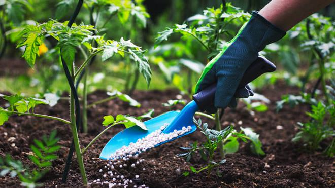

A fertilização é um processo natural, na agronomia, fertilização é o processo de fornecer nutrientes essenciais ao solo ou às plantas para promover seu crescimento saudável e aumentar a produtividade agrícola. Isso é feito através da aplicação de fertilizantes que contêm nutrientes como nitrogênio, fósforo, potássio, cálcio, entre outros, necessários para suprir as necessidades das plantas que podem não ser totalmente atendidas pelo solo. A escolha e aplicação adequadas dos fertilizantes são fundamentais para garantir o desenvolvimento das culturas e a qualidade dos produtos agrícolas.
Tipos de Fertilização

Existem diversos tipos de técnicas Fertilização química: Utilização de fertilizantes sintéticos ou industriais que contêm nutrientes essenciais, como nitrogênio (N), fósforo (P), potássio (K), entre outros. Esses fertilizantes são formulados para fornecer nutrientes específicos de acordo com as necessidades das culturas.
Fertilização orgânica: Utilização de materiais orgânicos, como esterco, compostos orgânicos, resíduos vegetais ou animais, para fornecer nutrientes ao solo. A fertilização orgânica promove a saúde do solo ao mesmo tempo em que fornece nutrientes de maneira gradual.
Fertilização mineral: Aplicação de minerais naturais ricos em nutrientes, como rochas fosfatadas, calcário, gesso, entre outros, para melhorar as propriedades físicas e químicas do solo e fornecer nutrientes essenciais às plantas.
Fertilização biológica: Uso de organismos vivos, como microrganismos benéficos (bactérias, fungos) e micorrizas, para melhorar a disponibilidade de nutrientes no solo e promover a saúde das plantas de forma natural.
Cada tipo de fertilização possui vantagens e considerações específicas em termos de eficácia, impacto ambiental, custo e sustentabilidade. A escolha do método de fertilização depende das condições do solo, das necessidades das culturas e das práticas agrícolas adotadas.
Benefícios da Fertilização
Os benefícios incluem: A fertilização na agronomia proporciona diversos benefícios importantes:
Melhoria da produtividade agrícola: Fornecer nutrientes essenciais às plantas ajuda a promover um crescimento saudável, aumentando tanto a quantidade quanto a qualidade dos produtos agrícolas.
Equilíbrio nutricional: A fertilização adequada ajuda a corrigir deficiências de nutrientes no solo, garantindo que as plantas tenham acesso aos elementos necessários para seu desenvolvimento ideal.
Melhoria da saúde das plantas: Nutrientes adequados fortalecem as plantas, tornando-as mais resistentes a doenças, pragas e condições adversas como seca ou excesso de umidade.
Uso eficiente de recursos: Ao aplicar fertilizantes de forma precisa e monitorada, os agricultores podem otimizar o uso de recursos como água e energia, melhorando a eficiência geral da produção agrícola.
Promoção da sustentabilidade: Métodos de fertilização que incluem práticas orgânicas ou biológicas podem reduzir o impacto ambiental negativo associado à agricultura intensiva, como a poluição por produtos químicos.
Manutenção da fertilidade do solo: A fertilização adequada contribui para a saúde a longo prazo do solo, mantendo sua estrutura física, capacidade de retenção de água e nutrientes, essenciais para o cultivo contínuo.
Aumento da rentabilidade agrícola: Ao melhorar a produtividade e a qualidade dos produtos, a fertilização eficaz pode aumentar a lucratividade das operações agrícolas, proporcionando um retorno mais sustentável sobre o investimento.
Clínicas de Fertilização
O Laboratório de Química e Fertilidade do Solo (LQFS) faz parte da infraestrutura do Curso de Agronomia e foi fundado em 2008. Além das atividades de ensino e pesquisa também realiza atividades de prestação de serviços de análises químicas de solos, análise granulométrica do solo (física), bioanálise do solo, materiais vegetais, substrato, hidroponia e fertilizante orgânico.
Programas que o Laboratório participa:
Programa de Controle de Qualidade de Análises de Solo da Rede Oficial de Laboratórios de Análises de Solos do RS e SC (ROLAS).
Programa Interlaboratorial de Análises de Tecido Vegetal (PIATV).
Ensaio de Proficiência para Laboratório de Análises de Solo do Instituto Agronômico de Campinas (IAC) para ensaio granulométrico.
Ensaio de Proficiência do Instituto Agronômico de Campinas (IAC) para Insumos Agrícolas.
Interlaboratorial de BioAS - Embrapa Cerrados.
.jpg)